Sony PlayStation 3 (Posse de Emanuel ferreira)
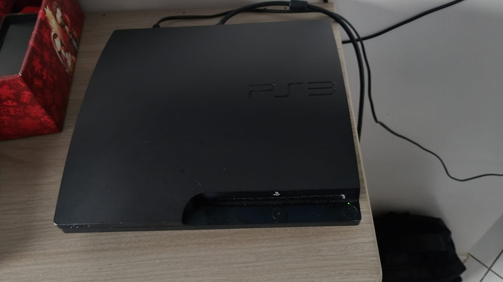
PlayStation 3
O PlayStation 3, também conhecido pela abreviação PS3,
é um console doméstico desenvolvido pela Sony Computer
Entertainment e lançado originalmente em 2006.
Ele é o sucessor do PlayStation 2 e faz parte da
sétima geração de consoles, concorrendo principalmente
com o Xbox 360 da Microsoft e o Nintendo Wii.
O PS3 ficou conhecido por sua arquitetura diferenciada,
especialmente pelo processador Cell Broadband Engine,
desenvolvido em uma parceria envolvendo Sony, IBM
e Toshiba.
Outra característica importante foi a utilização do
Blu-ray como mídia física para jogos, aproveitando a
grande capacidade de armazenamento do formato.
Lançamento e História
O PlayStation 3 foi apresentado pela Sony em 2005
e lançado comercialmente em novembro de 2006 no Japão
e na América do Norte, chegando posteriormente a
outros mercados.
O console foi concebido como uma máquina de entretenimento
digital, oferecendo jogos, reprodução de filmes em Blu-ray,
conexão à internet e diversos serviços multimídia.
Sua arquitetura utilizava um processador Cell extremamente
diferente dos processadores convencionais utilizados
em computadores pessoais e outros consoles da época.
Ao longo de sua vida comercial, a Sony lançou diversas
revisões do aparelho, reduzindo tamanho, consumo de energia
e custo de fabricação.
Mercado Brasileiro
O PlayStation 3 teve uma presença bastante significativa
no mercado brasileiro durante a sétima geração.
O console foi posteriormente produzido e comercializado
oficialmente no Brasil pela Sony, com versões destinadas
ao mercado nacional.
A PlayStation Network também passou a ter presença oficial
no país, permitindo acesso a conteúdos digitais, jogos,
demonstrações e outros serviços.
A chegada oficial do aparelho ajudou a consolidar a marca
PlayStation no mercado brasileiro durante uma época de
forte crescimento da distribuição digital.
Contexto Histórico
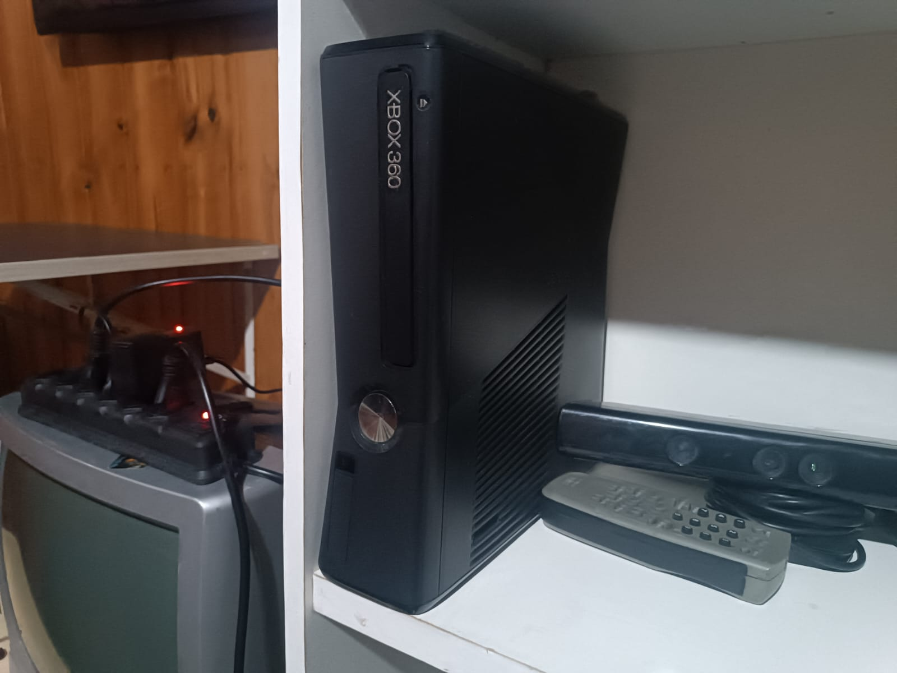
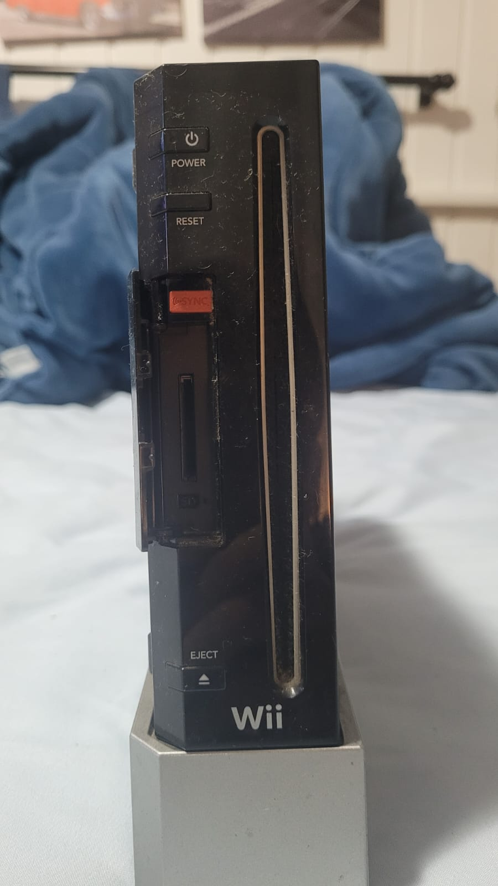
O PlayStation 3 fazia parte de uma geração marcada por
três estratégias bastante diferentes.
A Microsoft apostou no Xbox 360 e em uma forte estrutura
online através do Xbox Live, enquanto a Nintendo utilizou
controles por movimento e uma proposta mais acessível
com o Wii.
A Sony, por sua vez, apostou em recursos tecnológicos
avançados, no Blu-ray, na PlayStation Network e em uma
arquitetura de hardware bastante particular.
A geração também foi marcada pela popularização dos
jogos em alta definição, serviços online, atualizações
de software e distribuição digital de conteúdos.
O Cell Broadband Engine
Um dos componentes mais famosos do PlayStation 3 é o
Cell Broadband Engine, também conhecido simplesmente
como Cell.
O processador foi desenvolvido através de uma parceria
entre Sony, IBM e Toshiba e utiliza uma arquitetura
formada por um Power Processing Element e oito
Synergistic Processing Elements, sendo um dos SPEs
desativado em configurações comerciais para aumentar
o rendimento da fabricação.
A arquitetura oferecia grande capacidade de processamento
paralelo, mas exigia técnicas de programação diferentes
das utilizadas em arquiteturas convencionais.
Essa característica tornou o desenvolvimento de jogos
para o PS3 particularmente distinto em comparação com
outras plataformas da época.
Jogos e Acessórios
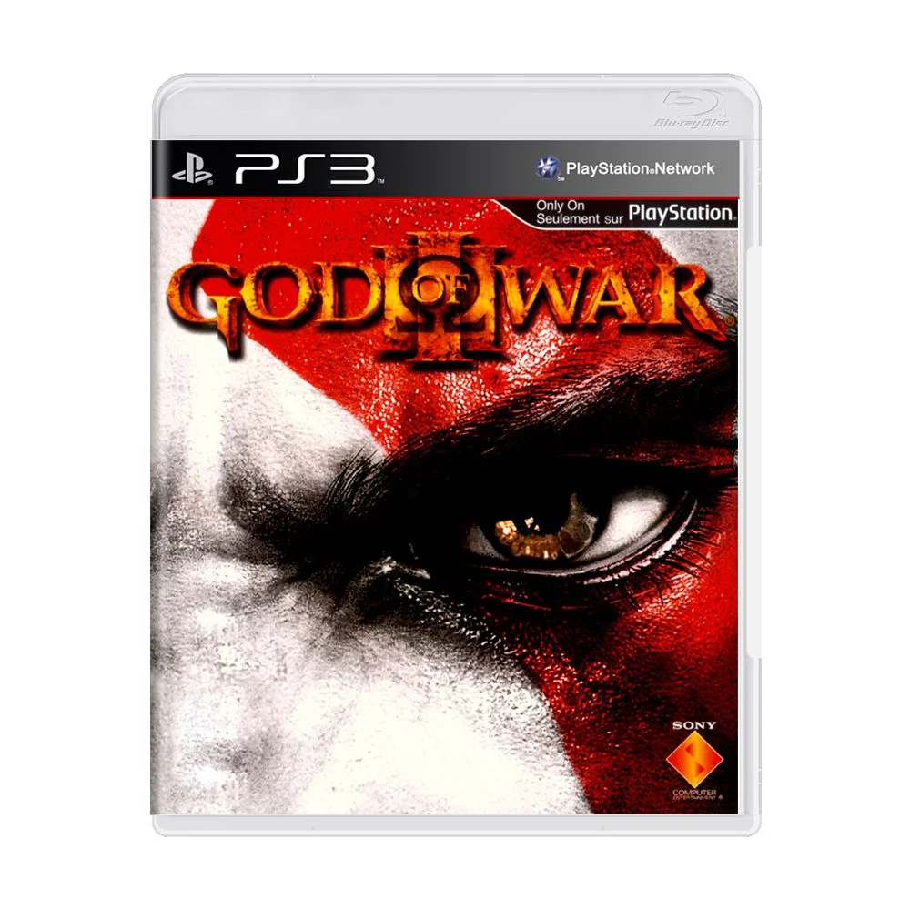
O PlayStation 3 recebeu uma grande quantidade de jogos
durante sua vida comercial, incluindo títulos exclusivos,
jogos multiplataforma e produções independentes.
Entre os jogos associados à plataforma estão
Uncharted 2: Among Thieves, Uncharted 3: Drake's Deception,
God of War III, Metal Gear Solid 4: Guns of the Patriots,
LittleBigPlanet, Killzone 2, Demon's Souls,
Gran Turismo 5 e The Last of Us.
O console também recebeu grandes títulos multiplataforma
como Grand Theft Auto IV, Red Dead Redemption,
Batman: Arkham City, Portal 2 e vários títulos das
séries Call of Duty, FIFA e Assassin's Creed.
Entre os acessórios estavam o controle DualShock 3,
PlayStation Eye, PlayStation Move, Headset Bluetooth
e diferentes dispositivos compatíveis com a PlayStation
Network.
Blu-ray
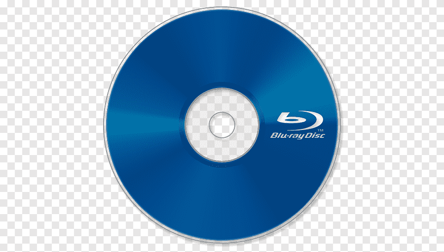
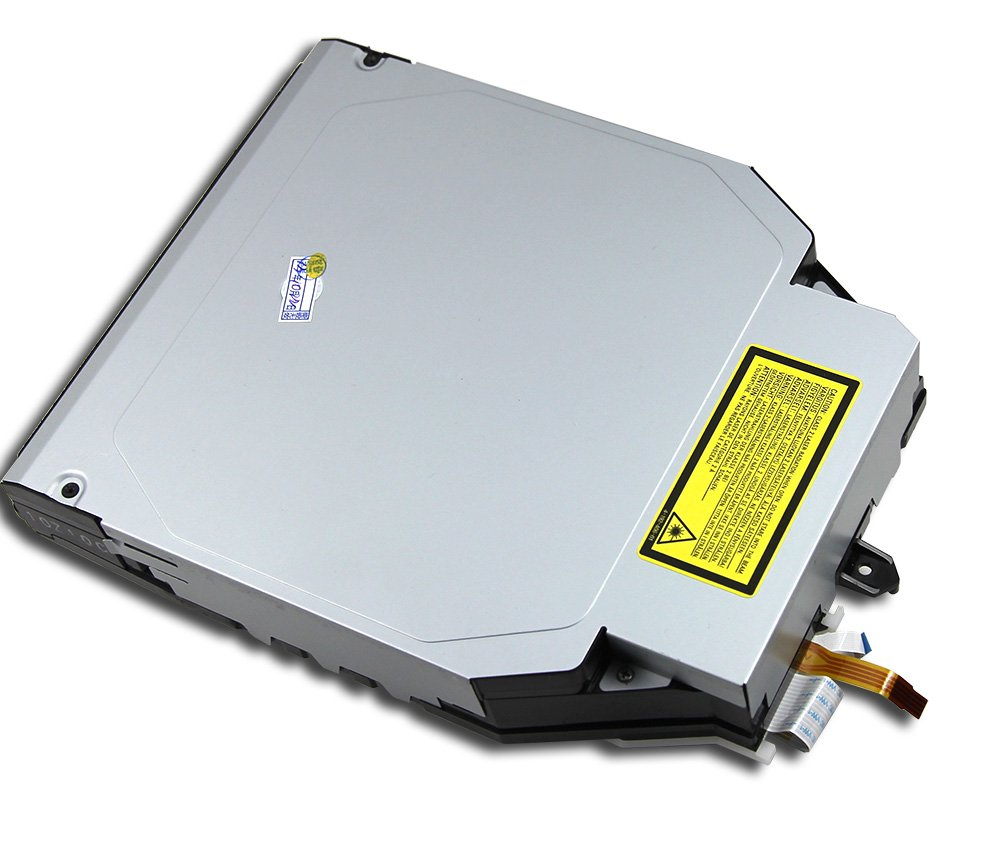
O Blu-ray foi uma das características mais importantes
do PlayStation 3.
Enquanto gerações anteriores utilizavam principalmente
CDs ou DVDs, o PS3 adotou o Blu-ray como mídia física
para seus jogos.
A capacidade muito maior do Blu-ray permitia armazenar
grandes quantidades de dados, sendo especialmente útil
para jogos com texturas, vídeos e outros arquivos de
grande tamanho.
A unidade também permitia utilizar o console como
reprodutor de filmes em Blu-ray, ajudando o formato
a se estabelecer durante a transição para a mídia
de alta definição.
PlayStation Network
O PlayStation 3 também foi importante para a expansão
da infraestrutura online da Sony.
A PlayStation Network permitia criar contas, comprar
jogos e conteúdos digitais, baixar demonstrações,
atualizar jogos e utilizar recursos multiplayer.
Diferentemente do Xbox Live Gold, o multiplayer online
básico do PS3 não exigia uma assinatura paga específica.
A plataforma também recebeu serviços adicionais,
aplicativos e recursos multimídia durante sua vida útil.
Modelos e Variações
O PlayStation 3 recebeu diversas revisões durante sua
fabricação.
O modelo original ficou conhecido como Fat e apresentava
um acabamento predominantemente brilhante e um tamanho
considerável.
Posteriormente, a Sony lançou o PlayStation 3 Slim,
uma revisão menor, mais leve e com menor consumo de energia.
O último modelo principal foi o PlayStation 3 Super Slim,
que apresentou uma carcaça ainda menor e uma tampa
deslizante para a unidade de discos.
Também existiram diversas versões de armazenamento,
cores e edições especiais.
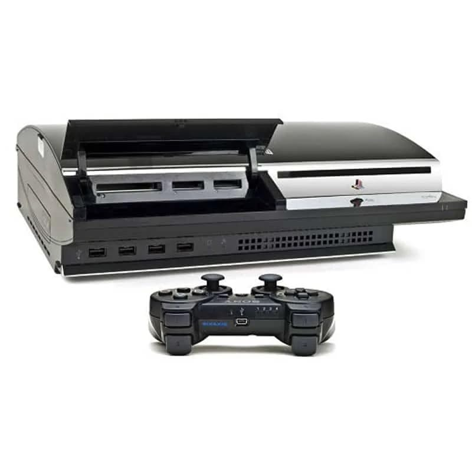
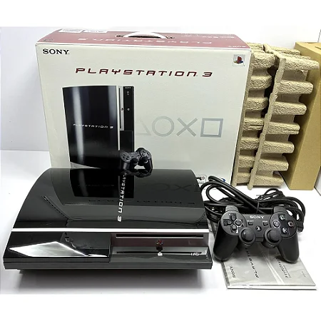
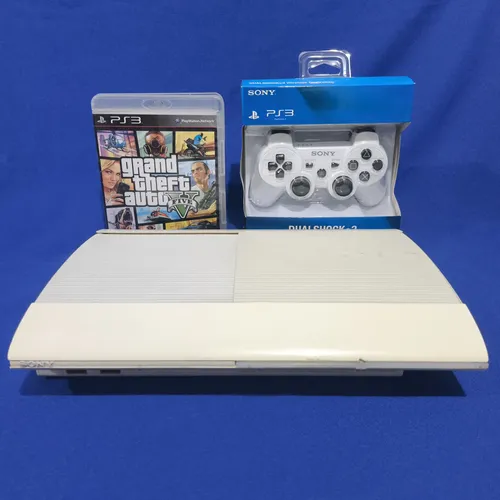
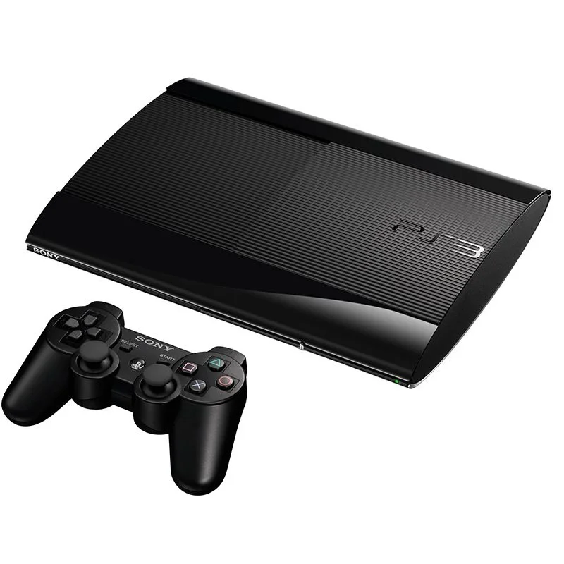
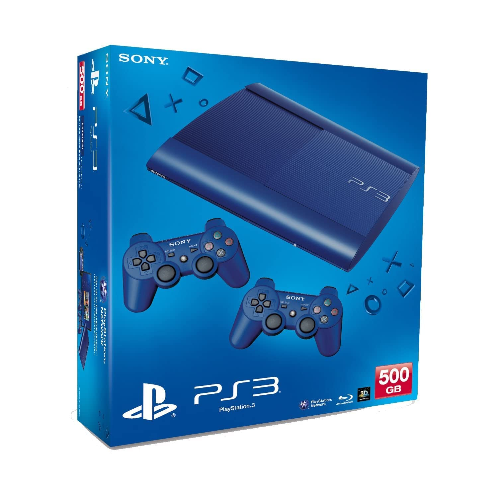
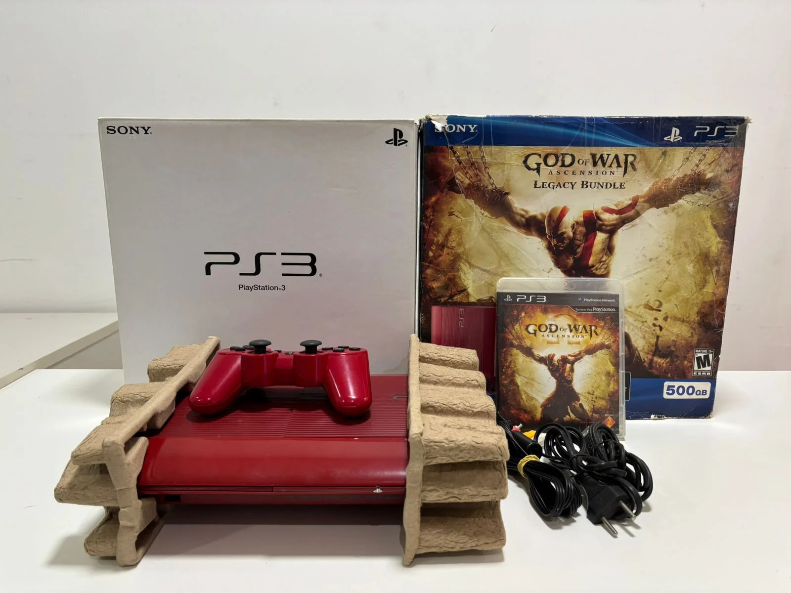
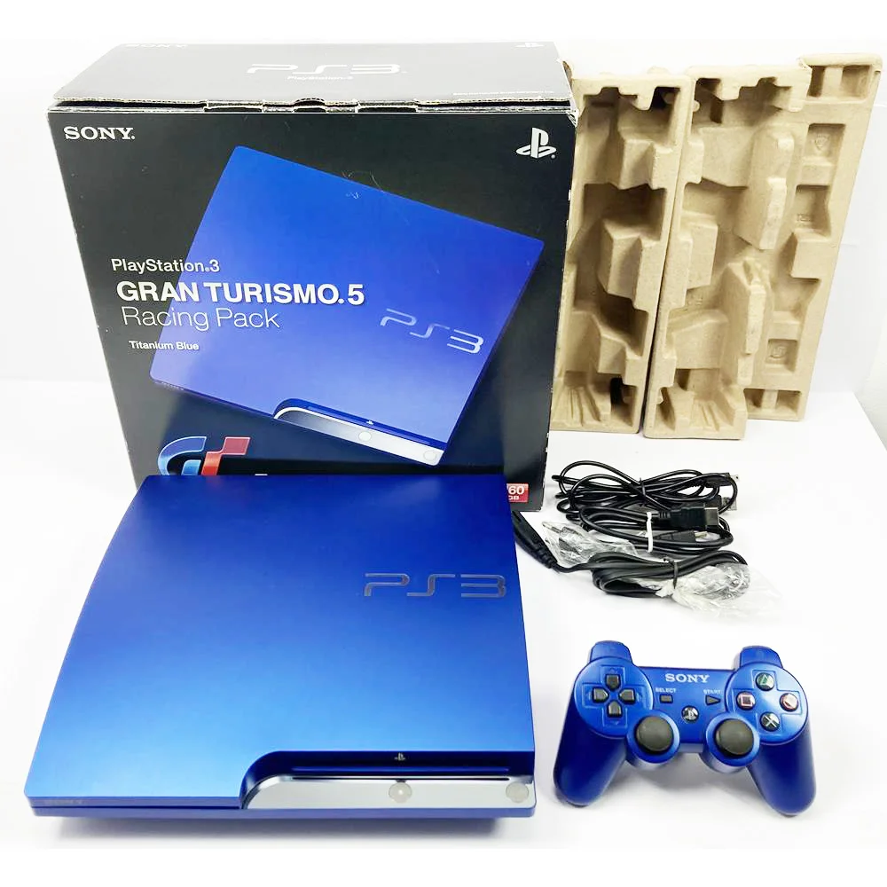